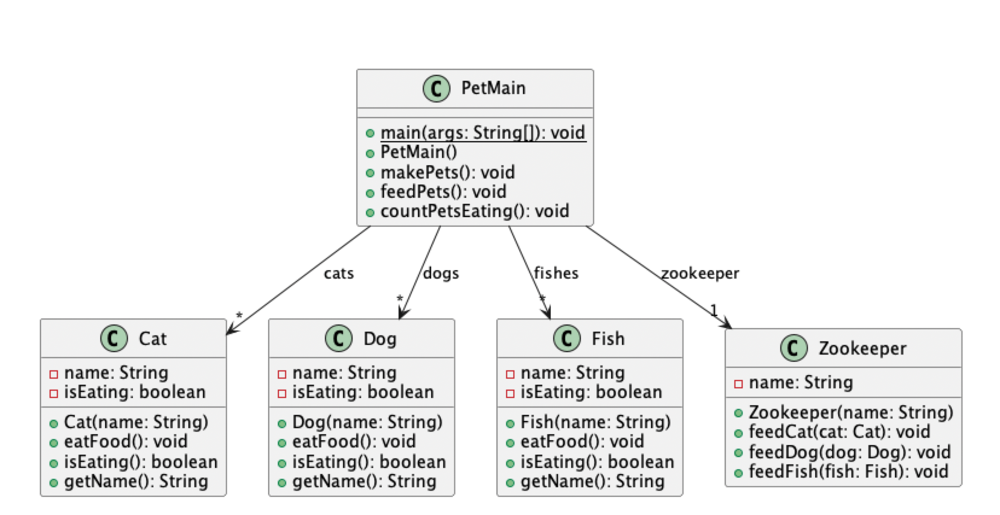

Lab Assignment 09
In this lab, you will practice choosing the correct access modifiers, understanding scope, and deciding when fields should be static or final. You will repair a broken design using both a scenario description and starter code.
⚡ Instructions
-
Graded work:
Complete the required tasks in the provided starter zip project and submit your work to Gradescope.
all completed
.javafiles and your fixed UML diagram
Starter ZIP File
- Download starter zip file: Lab09.zip and import it into Eclipse as Existing Project (see Lab02 for details).
-
What to submit on Gradescope:
Upload all completed
javafiles and your UML diagrams to the Lab 09 assignment. The Gradescope link is available on Moodle.
01. Broken UML Submission
Resources 1: Access & Scope
💻 Coding guide: Fix the Broken Code
A broken export removed important Java design information from a game project. Your job is to restore the correct design by choosing the proper:
- access modifiers:
private, default,protected,public staticfieldsfinalconstants- correct use of scope
- fix the bug in
setHealthso that it correctly updates the player's health
Step 1: Scenario + UML
In your game, each Player stores information about its own health, level, and score.
Some of this data should be carefully protected, while some should be shared across all players.
Your team received a broken UML/code export where the access modifiers and some keywords were lost. Your job is to restore the correct design based on the intended behavior below.
@startuml
title Broken UML Export - Player Design
interface Healable {
heal(amount : int) : void
}
class Player {
health : int
level : int
score : int
totalPlayers : int
MAX_HEALTH : int
setHealth(health : int) : void
getHealth() : int
addScore(points : int) : void
heal(amount : int) : void
}
Player ..|> Healable
@enduml
Design Requirements
- Each player has its own health. Health belongs to one specific player and should not be changed directly by other classes. Other code should use methods to update or read it safely.
- Each player has its own level. Level belongs to one specific player and should be stored as part of that player's internal state.
- Each player has a score. Score belongs to one specific player and should be visible to subclasses, because special kinds of players may need to update or use score directly later.
- The game tracks the total number of players. This value is shared across all players, so there should be only one copy for the whole class.
- The game has a maximum health value. This value is the same for every player, should be shared by all players, and should not be changed after it is defined.
-
A player can be healed.
Healing is a behavior required by the
Healableinterface. - When setting health, the code should correctly update the player’s field. Avoid scope mistakes such as assigning a parameter to itself.
Step 2: Your Tasks
Restore the correct Java design by choosing:
- the correct access modifier for each field and method
- which fields should be
static - which fields should be
final
Then fix the code so it behaves correctly and passes the tests.
Step 3: Submission
Demo your solution UML before the submission to verify its correctness.
Submit the following files to Gradescope:
Player.javaHealable.javaUML
Before You Submit
- Make sure your code compiles with no errors
- Make sure to demo your UML solution
- Run the provided tests and check that they pass
- Verify that your design matches the scenario requirements
- Double-check access modifiers,
static, andfinalusage - Make sure your
setHealthmethod correctly updates the field
Reminder
This lab is not only about making the code work. It is also about restoring a clean object-oriented design.
02. Zoo Refactoring Submission
Resources 1: Interfaces
Pets
In this lab, you will use an interface to reduce duplicate code.
You will create a common Pet interface, update the provided pet classes,
and refactor the rest of the program to work with Pet objects.
Before You Code: Study the Design
The UML diagram below shows the current design of the pet system. Before making any changes, take a close look and think about what feels repetitive.

Think First
- What methods are repeated in
Cat,Dog, andFish? - Why does
Zookeeperneed three separate feeding methods? - What problem might happen if we add a new class like
Birdlater? - How could an interface help simplify this design?
You do not need to submit written answers unless your instructor asks for them. This is here to help you spot the design problem before refactoring.
Task 1: Create the Pet Interface
Pet Interface
Create an interface named Pet with these method signatures:
void eatFood();boolean isEating();String getName();
Make sure the method names and return types match the methods already used in the pet classes.
Task 2: Update the Pet Classes
Modify Cat, Dog, and Fish so that each class
implements Pet.
- Add
implements Petto each class declaration - Keep the existing method behavior the same
- Add
@Overrideabove each method you implement from thePetinterface
You are not rewriting the class logic. You are connecting each class to the shared interface.
Task 3: Refactor Zookeeper
Zookeeper
The current Zookeeper class has separate methods for feeding different pets.
Refactor it to use one method that accepts a Pet parameter.
- Remove the separate methods for
Cat,Dog, andFish -
Create a method named
feedPetthat takes aPetparameter.
Think about the parameter type carefully:
use Pet, not Dog or Cat.
Task 4: Refactor PetMain
PetMain
The original program uses separate collections for different pet types.
Refactor it to use one collection of type List<Pet>.
- Store all pets in a single
List<Pet> - Iterate through that list to process pets in one unified way
- Keep using an
ArrayListwhen creating the object
Use this format when declaring the variable:
List<Pet>, not ArrayList<Pet>.
This is called programming to an interface:
the variable uses the interface type, while the object can still be created with
new ArrayList<>().
Note: The original PetMain had separate lists for cats, dogs, and fishes. Refactoring to a single list of type Pet reduces duplicate code and makes it easier to work with all pets uniformly.
Submission Requirements
- Make sure your program compiles and runs
- Submit your completed Java files
- Generate and submit a UML diagram for the refactored design
What your UML should show
Petas an interfaceCat,Dog, andFishimplementingPet- Refactored relationships in
ZookeeperandPetMain